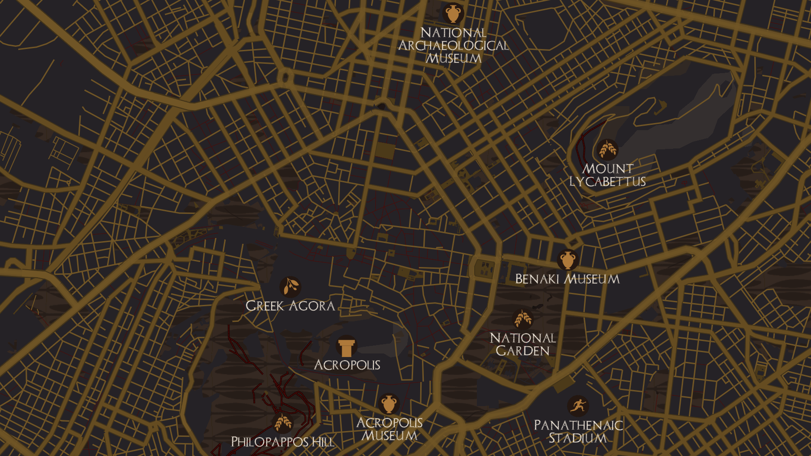
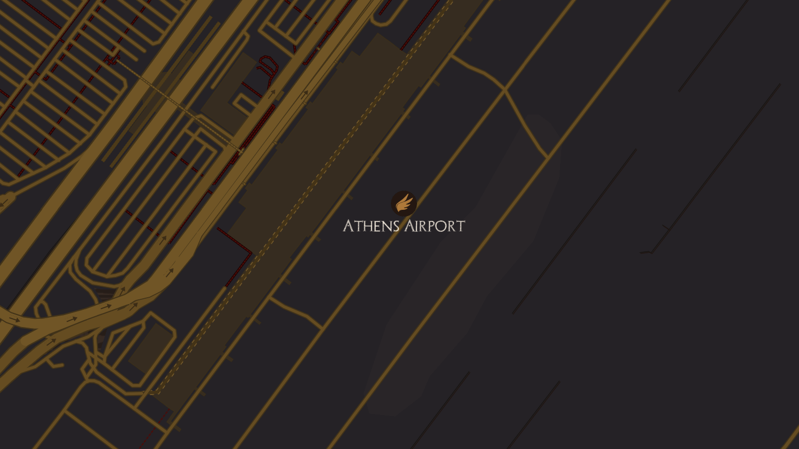
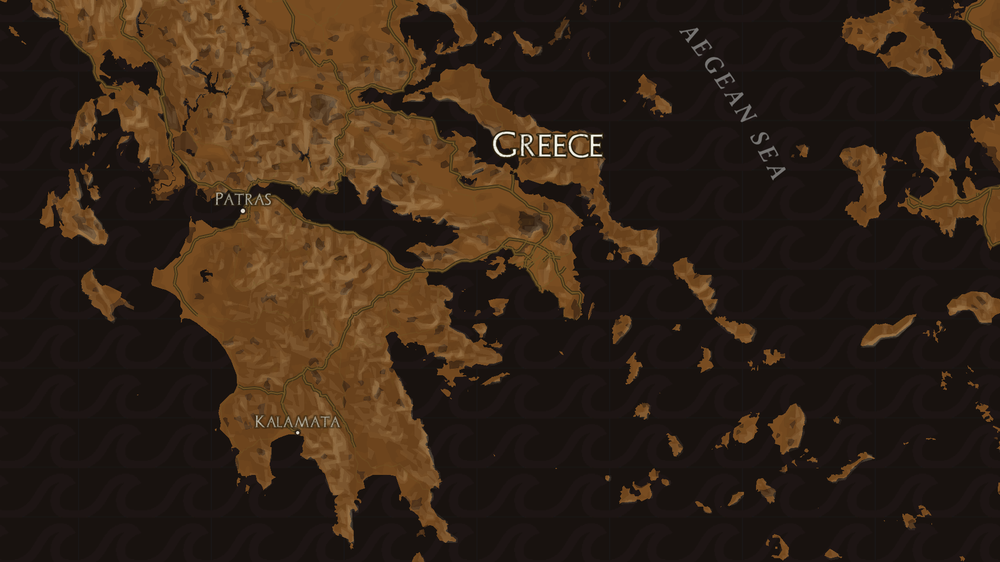
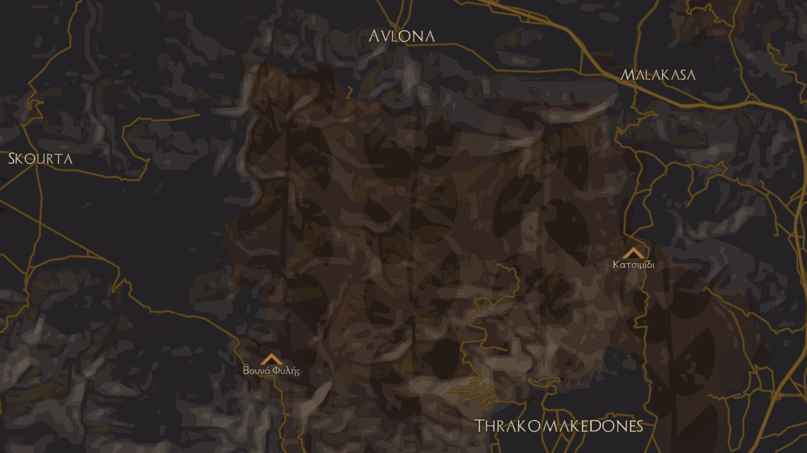
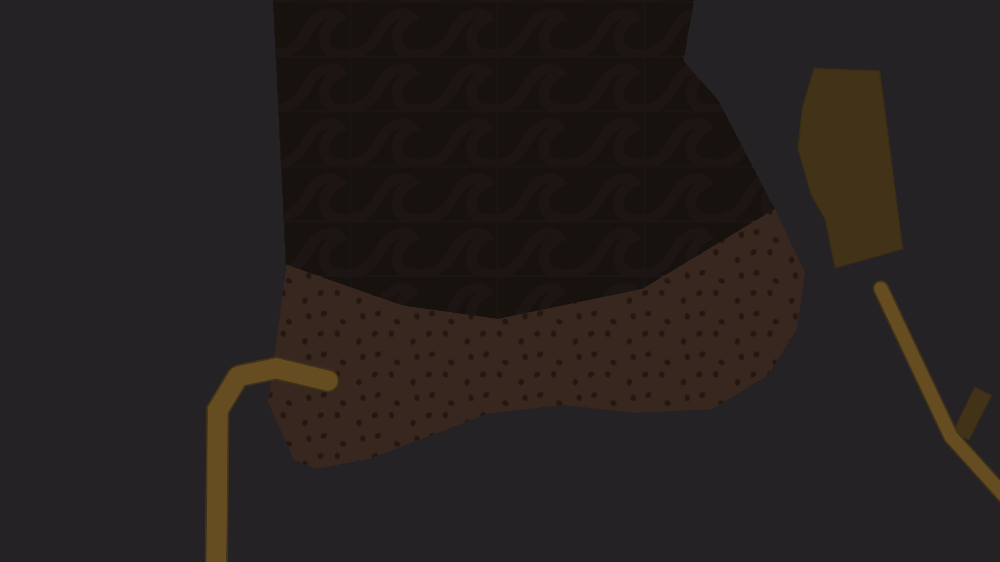
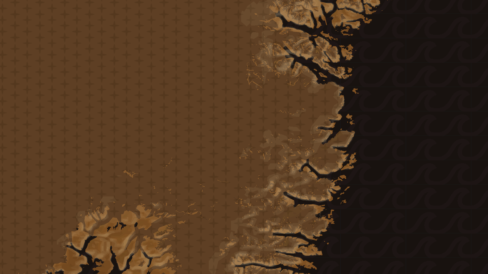
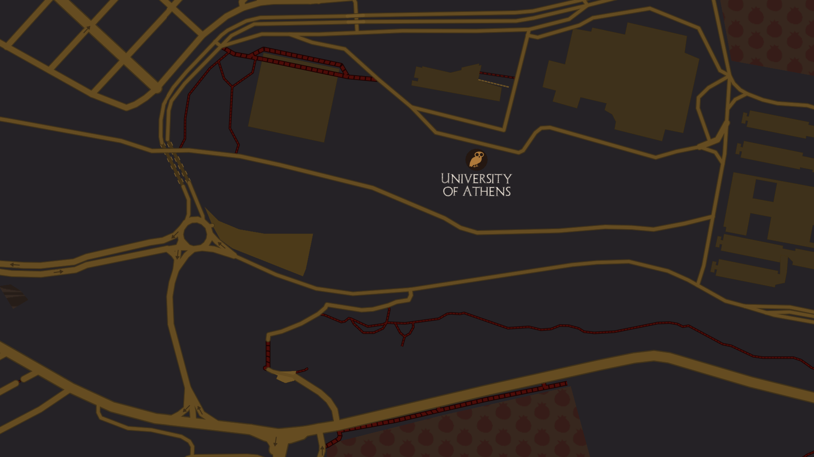

Greek Pottery Tileset
Drawing from Ancient Greek red-figure pottery, this tileset was created with Mapbox Studio to elicit an ancient feel. I also used Adobe Illustrator to create icons that locate important historical and modern sites in Athens, Greece.
Red-figure pottery is characterized just as it sounds: red (or orange) figures with a black background. At a small scale, then, the oceans are dark, and the land is orange. At a larger scale, the land shifts to dark, while features such as roads are orange. Icons are also orange.
Icons locate specific sites, such as the Parthenon, or the Temple of Zeus. Icon design was inspired by art from ancient pottery. For example, the Athens Airport is represented by the winged shoes of Hermes, while Athens University is represented by an owl, representing Athena, goddess of wisdom.
Other than the initial black and orange, white and red feature on the map. Ancient pottery often included text in white, so the same convention is used here. Bright red was used only sparingly, as a highlight, so here only walking paths are red.
Ancient pottery drew on a variety of textures and borders. I copied those textures in my design: waves for water, dots for sand, and laurel leaves for parks.
The map begins in Athens to highlight the historical sites, but by zooming in and out, any part of the world can be reimagined through ancient pottery.
Above, take a look at the map yourself. Below, I describe some of my stylistic choices with more detail.

Ancient Greek red-figure pottery is typically associated with orange and black. The text, however, was often white, and I reflected that through place names. I used a font reflecting ancient styles, with a limited number of labels to avoid overwhelming the frame.

When zooming into the city of Athens, I have placed a number of icons to identify notable sites. The icons are drawn with inspiration from Greek pottery and Greek art. Second, the orange streets on a black background reflect the orange figures on the dark vases.

With the icons, I worked to combine ancient and modern. I represented the Athens Airport, for example, with wings styled after the shoes of Hermes.

When zooming out, the land transitions to orange, and the sea to black. Again, reflecting ancient pottery, the background is always dark, and the images drawn on top are orange.

I used textures, inspired by the patterns on ancient pottery, to classify different types of land. The laurel leaves represent parks, and mountains are symbolized by triangles, drawn from the zig-zag borders of vases.

For sand, I used irregular dots; this pattern was often used for animal skins. For bodies of water, I used waves, which were taken from the borders of ancient pottery. Note that in the water, the waves are barely visible to avoid being distracting.

Greek pottery often did not depict snow, coming from a Mediterranean environment. Therefore, I took the stars from an image of a dress, hoping to capture the essence of winter.

For graveyards, I took the imagery of the pomegrante. Though not directly from pottery, pomegrantes were associated with Hades and the Underworld. I used red for both these pomegrantes and walking streets. While ancient pottery mostly relied on orange, bright reds were used sparingly. I wanted to include red in an equally limited way here.